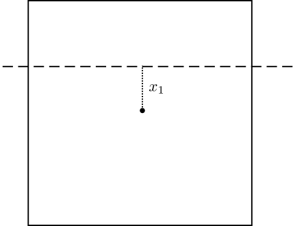
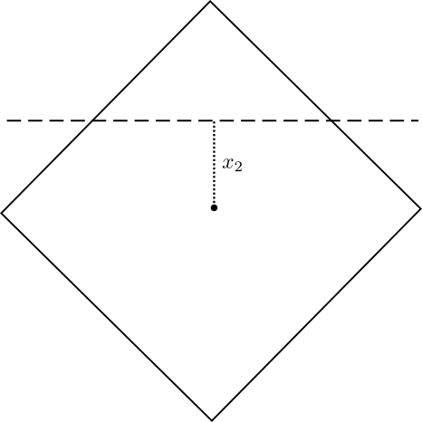
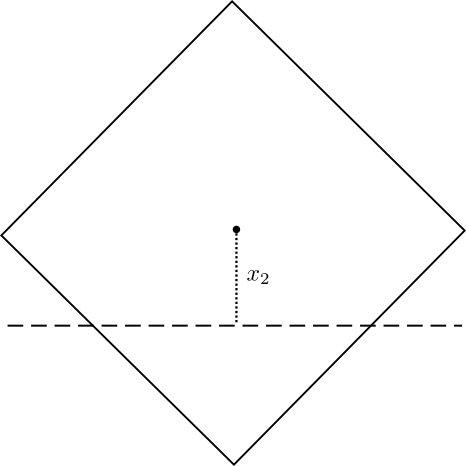
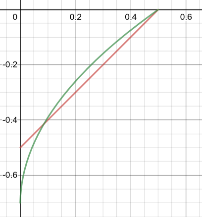

Float orientation
Question:
Suppose you had a wooden rectangular prism with a square base that's longer than it's wide. Then you put it in water. Intuitively, it floats horizontally in the water. But does it float with a face pointing up or does it float with an edge pointing up?
Solution:
Here's the key idea: whichever orientation results in the lower center of mass is the orientation that the block will assume. (Everything seeks to reduce its potential energy.)Constants:
- Density of the block: $\rho$
- Density of the water: $\rho_w$
- Relative density: $\lambda = \rho/\rho_w$
- Side length of the square: $a$
- Length of the block's long edge: $l$

Using Archimede's principle, we find: $$\rho l a^2 = \rho_w l a\left(\dfrac{a}{2}+x_1\right).$$ Solving, $$\dfrac{x_1}{a} = \lambda - \dfrac{1}{2}.$$
Consider scenario 2:

(We need to assume $\lambda > 1/2$ here, since the water line is at the top part of the face.)
As before, we have the slightly more complex equation $$\rho l a^2 = \rho_w l \left(\dfrac{1}{2}a^2 + \dfrac{1}{2}a^2 - \dfrac{1}{2}(a - \sqrt{2}x_2)^2\right).$$ This simplifies to the quadratic equation: $$\left(\dfrac{x_2}{a}\right)^2 - \sqrt{2}\left(\dfrac{x_2}{a}\right) + \left(\lambda - \dfrac{1}{2}\right) = 0.$$ Solving, $$\dfrac{x_2}{a} = \dfrac{\sqrt{2}}{2} - \sqrt{1-\lambda}.$$
We do still need to address $\lambda < 1/2.$ (We don't need to do that for the first orientation though, the geometry is not significantly affected by where the water line is.)

Note that in this scenario, $x_2$ will be negative. (If $\lambda < 1/2$ in the first scenario, then $x_1$ will also be negative.)
We have $$\rho l a^2 = \rho_w l \left(\dfrac{1}{2}(a + \sqrt{2}x_2)^2\right).$$ This is the quadratic $$\left(\dfrac{x_2}{a}\right)^2 + \sqrt{2}\left(\dfrac{x_2}{a}\right) + \left(\dfrac{1}{2}-\lambda\right) = 0.$$ Solving, $$\dfrac{x_2}{a} = -\dfrac{\sqrt{2}}{2} + \sqrt{\lambda}.$$
Hence, we have to compare the following expressions:
When $\lambda > 1/2,$ which of these is smaller: $\lambda - \dfrac{1}{2}$ or $\dfrac{\sqrt{2}}{2} - \sqrt{1-\lambda}$?
When $\lambda < 1/2,$ which of these is smaller: $\lambda - \dfrac{1}{2}$ or $-\dfrac{\sqrt{2}}{2} + \sqrt{\lambda}$?
For $\lambda > 1/2$:

Here, we see that $\dfrac{\sqrt{2}}{2} - \sqrt{1-\lambda}$ is smaller for $0.5 < \lambda < \sqrt{2} - \dfrac{1}{2}$ and $\lambda - \dfrac{1}{2}$ is smaller for $\sqrt{2} - \dfrac{1}{2} < \lambda < 1.$
For $\lambda < 1/2$:

Here, we see that $-\dfrac{\sqrt{2}}{2} + \sqrt{\lambda}$ is smaller for $0 < \lambda < \dfrac{3}{2} - \sqrt{2}$ and $\lambda - \dfrac{1}{2}$ is smaller for $\dfrac{3}{2} - \sqrt{2} < \lambda < 0.5.$
So that's all the math! Let's make a table for our findings.
| $0 < \lambda < \dfrac{3}{2} - \sqrt{2}$ | Floats Edge Up |
| $\dfrac{3}{2} - \sqrt{2} < \lambda < \dfrac{1}{2}$ | Floats Face Up |
| $\dfrac{1}{2} < \lambda < \sqrt{2} - \dfrac{1}{2}$ | Floats Edge Up |
| $\sqrt{2} - \dfrac{1}{2} < \lambda < 1$ | Floats Face Up |